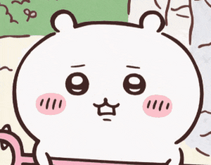

백민주 멘토
사교성 폭발! 집순이지만 귀여운 우리 민주 멘토를 소개할게요!

백민주 🍀
영어영문학과 멘토백민주 멘토의 특징
사진 속 민주 멘토, 반가워요~ 👋
- 💬사교성 넘치는 ISFP의 소유자
- 🏠누구보다 집을 사랑하는 집순이
- 📖영어영문학과의 능력자
- 🥰맏언니지만 막내같은 귀요미 장착
-
🐹
좋아하는 캐릭터는 치이카와

- 🌶️매운맛의 그녀! 마라샹궈부터 엽떡까지 매운거 다 가져와!
- 🚌신안초 학생 만나러 김해에서 통학중..
- 💖신안초 학생들 5일 동안 우리 행복한 시간 보내자!!